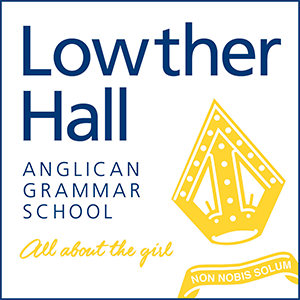

IT Support and Operations
- Managed AD accounts and GPO for staff and students; clean onboarding/offboarding.
- Supported Google Workspace, M365, Synergetic and Schoolbox.
- Autopilot for executive and student devices; policy review and ESP tuning.
- Replatformed helpdesk to ManageEngine ServiceDesk Plus (AD sync, mail-to-ticket, SLAs/approvals, KB, asset discovery); trained staff.
- Deployed agents via GPO for asset scanning and endpoint visibility.
- Mail groups, rules and permissions in Exchange Online.
- MITEL phones with vendor coordination. AV for assemblies, exams, livestreams.
- Executive-level IT service reporting for planning and risk.
ADAzure ADIntuneAutopilotJAMFExchange OnlineServiceDesk Plus